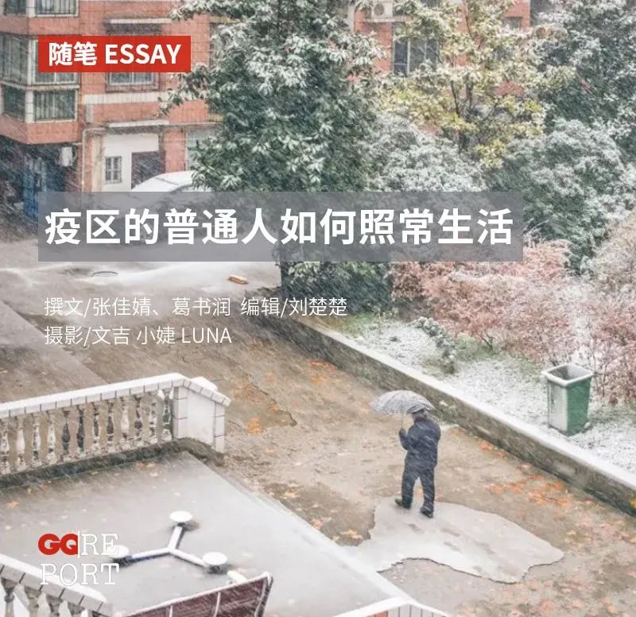
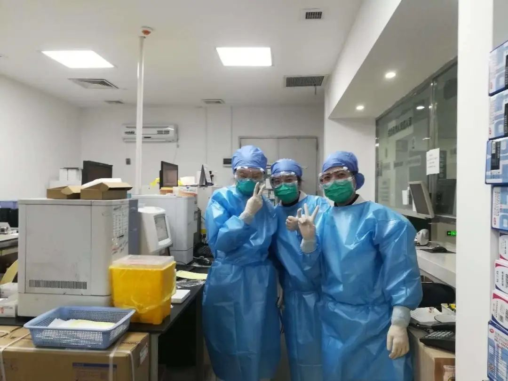
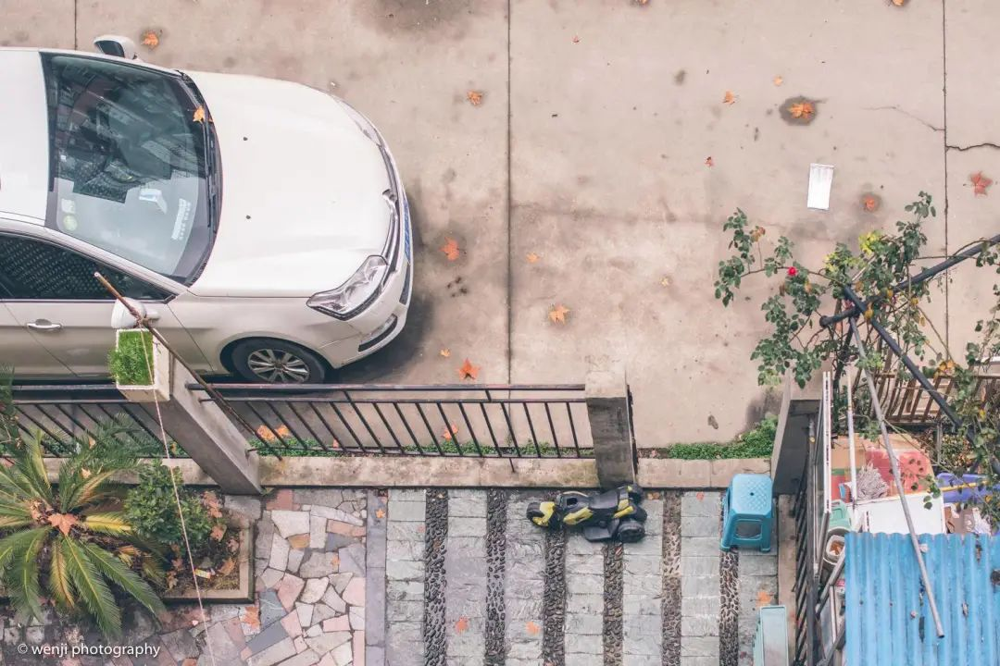
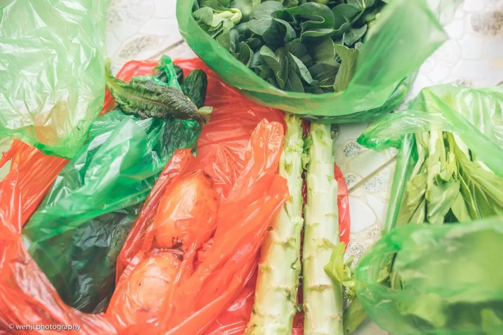
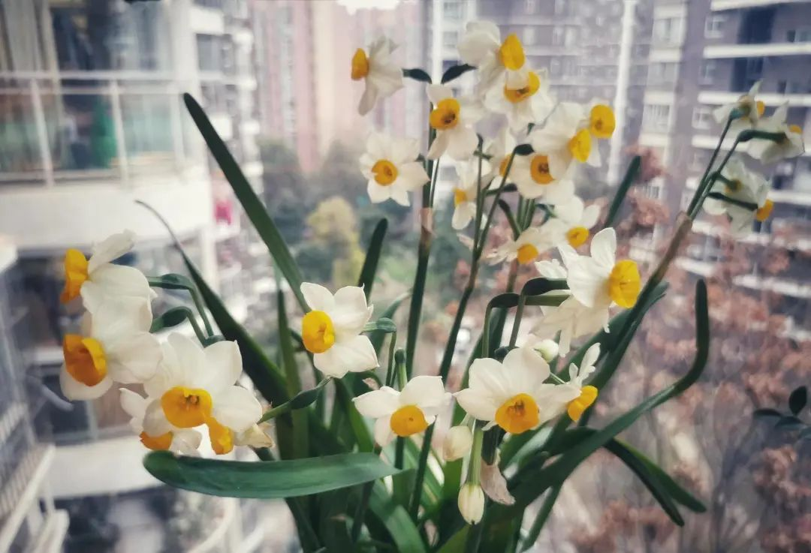
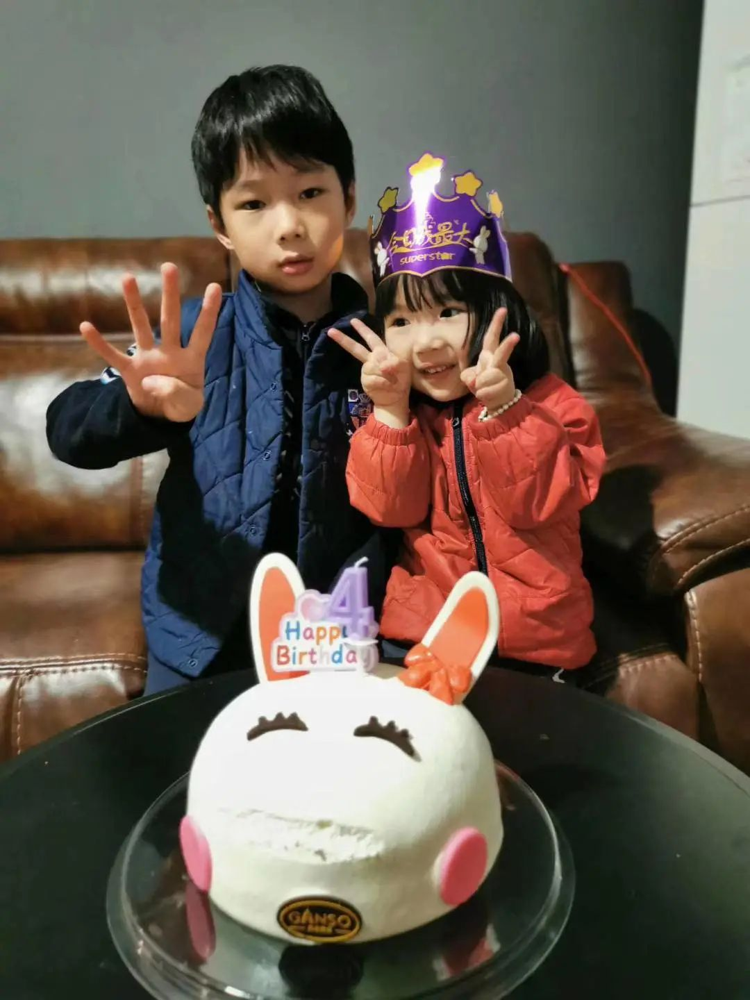
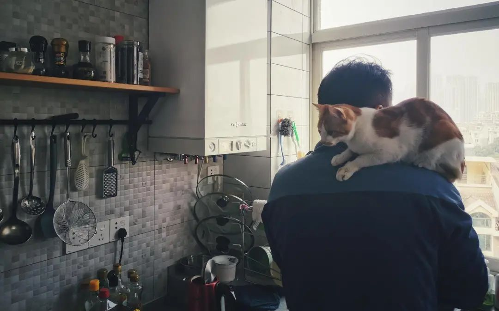
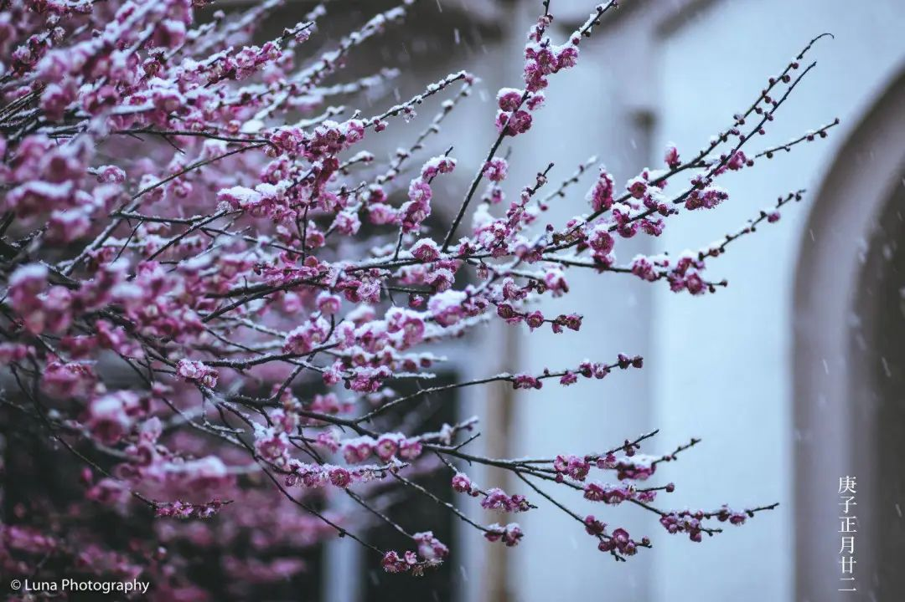
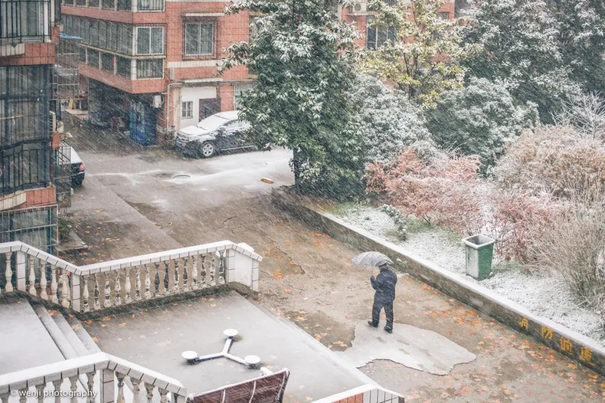

口述实录 | 起初还有点小心思，现在我的小货车已经“停”不下来了
原文链接 备份链接 经过这次疫情，我对《我不是药神》这部电影感触特别深。我明白了平时物资储存的重要性，这样在特殊时期才能派上大用场。 口述 | 赵 勐 整理 | 王仲昀 我叫赵勐，干物流行业的。大年初一下午，我一个人在家睡觉。醒来看到微信 …

这个冬天，疫情阴霾笼罩江城，居家的普通人也在经历着一种特殊的考验：面对骤然失序的生活，人们应该如何重建日常生活的秩序？她们尝试用镜头记述点滴，寻找答案。
···············
❶
*** “白大褂脱下来了，***
***但我手里还有相机。******”***
摄影师文吉在曾经工作的医院门外拍下了这张照片，从外部来看，医院非常的安静，谁也不知道里面正发生着什么。文吉戴着两层口罩，一个是防雾霾的，一个是棉的，都起不到多大防护的作用。她在医院门口呆看了一会儿，没有进去，驱车返回。

中国人民解放军中部战区总医院是收治新冠肺炎患者的定点医院，门口一块硕大的石头上刻着：“一切为了人民健康”。文吉来到医院门口时，两个人正围着几个箱子讲话，文吉说：“但愿是口罩。”
半年前，文吉从医院辞职，加入了一个摄影工作室。疫情爆发以后，文吉的父亲对女儿当初放弃医院安稳的工作的决定突然释怀了：“转行了也好，安全。”武汉封城前，文吉以为疫情十天半个月就会过去，还庆幸着这下不用上一线加班了。
但随着疫情的逐步扩大，文吉的心态又变了。辞职后，她还留在检验科的科室群里，刚封城那几天，群里充斥着各种物资缺乏的消息，快递停运，同事们自掏腰包买的防护服也收不到，文吉却“什么忙也帮不上”，她向朋友倾诉：“我好想上一线啊，我想跟以前的同事在一起……”
过去的八年里，下图的中南路和武珞路的三叉路口是她每日通勤的必经之路。记忆里，早上七时一过，公交车与私家车便将这个路口塞得水泄不通，没有20分钟通不开。1月24日下午四点，当她端着相机重走这条路时，画面上只剩下一红一黄两个快递小哥的制服颜色，鲜艳得有些刺眼。

这是武汉封城的第二天，连天的阴霾像给武汉套上了一个巨大的口罩，防止病毒扩散的同时，也闷住了这个城市平日的生气。“九省通衢”的江城停滞了。汽车站、火车站停运，景区空无一人，离开武汉的高速路口关闭。文吉感慨：“我们的城市生病了，武汉真的生病了。”

汉阳去往武昌方向的马路上，一块电子屏显示着“出城通道封闭，敬请理解支持。”这条标语和路况信息在电子屏上滚动播出。
下午五点，文吉结束拍摄回到家里，洗了个澡，她马上开始处理今天的素材：“虽然白大褂已经脱下来了，但我手里还有相机。”
修图修到一半，她看到了曾经的科室群里的新消息，照片里，她的旧同事们穿戴着全套的防护用具，对镜头比了个耶。

封城前几天，文吉还不清楚疫情的势态，曾劝相识的医务工作者们不要做“伟人”，封城后，看到曾经的同事们的消息，却忍不住感叹她们的“伟大”。
❷
***找回生活的秩序感***
这次拍摄回来之后，文吉决定除了买菜不再出门。她将镜头转向家中的生活，一天一天，就这么持续到了现在。

1月25日，文吉晒在阳台上五颜六色的袜子。

1月26日，文吉屯了一篮子漂亮的橙子。

文吉和父亲住的小家不过七十个平方，装修的也简单，文吉更喜欢拍局部。1月29日，文吉拍下这个微笑着的垃圾桶。
 越发茂盛的酢浆草盆栽，摄于1月31日。
越发茂盛的酢浆草盆栽，摄于1月31日。

从阳台俯瞰下去，邻居家的院子里开了一株小小的蔷薇花，长出了围栏。文吉写道：“在这样一个季节里，生命还在，还有花朵在绽放。”摄于2月7日。

1月末，文吉开始练字，她说，抄写佛经的时候，能够获得一种久违的“平静”，摄于2月12日。
家里的阳台是唯一通向外界的地方，2月18日是个难得的晴天，风一吹，阳台上的风车便转动了起来。

2月10日，文吉拎回来了一袋绿油油的新鲜蔬菜，莴笋叶子已被老板给好心去除了。这些天，每周二次的采买是她仅有的外出活动，她总是戴着两层口罩，套一层薄膜手套，朝小区门口的菜贩子径直走去，快去快回。摆摊的是一对山东夫妇，一大早拉来一车蔬菜在小区门口卖，价格与平常几乎无异。
家庭主妇小婕的居家图片日记，则是受文吉启发开始的。
刚封城那几天，小婕焦虑不安。封城前来家中做客的朋友出现了肺炎症状，等待检查结果的那段时间，小婕“整个人的心一直是悬着的”。有次女儿凑上来找妈妈，小婕一时没控制住，朝女儿吼，“你自己找个地方玩儿去，我现在没有心情陪你！”
即便后来知道，朋友得的是普通肺炎，小婕始终难以打消心中紧张感。1月下旬，各种糟糕的新闻遍布网络，她和朋友打电话聊疫情，一打打到凌晨。
直到看见文吉的几组居家照片，小婕才稍稍缓解了自己的负面情绪。看着色调明亮的图片，小婕感到“像回归了正常生活。”此后，她开始以同样的方式记录一家人的生活。
年前一周，小婕从姐姐的花店带回来一株水仙，刚封城时它还含苞，2月6日便完全盛开了。如果以水仙所感知的时间来计算，14天正好足够一株花含羞又开败，等待下一蔟预备军的到来。

小女儿哎呀生日的那天，因为没有迎来一场想象中的热闹生日，哎呀一直噘着嘴表示不满，小婕带她观察生态瓶里面的小虾米转移注意力。

那是1月23日上午，武汉封城的第一天，也是哎呀的四岁生日。两个孩子不理解“封城”的含义，更不懂什么是“新型冠状病毒”，他们期待的是小伙伴们和爷爷奶奶、姥姥姥爷能一起来给她过生日、唱生日歌、吹蜡烛、切蛋糕。毕竟“别的小朋友都有的。”
经过卧室，小婕看见兄妹俩黏在窗户玻璃上往下望，两人一边喝着牛奶，一边念叨着：“萌萌姐姐会来吗？姗姗姐姐会来吗？她们说了要来的。”看到这个场景，小婕“鼻子酸酸的”。

小婕把两个孩子揽在怀里耐心解释：”我们现在正在打一场仗，敌人的名字叫冠状病毒，它会让你生病，现在外面已经有很多很多人被它伤害了。前线的医生护士在帮助生病的人。我们后方的人，要老老实实在家里呆着，不让敌人找到我们。“

封城前一天预订的蛋糕准时送来了。晚上，一家四口给小女儿过了个简单的生日。
1月29日，小婕在朋友圈里分享了据说最难吃的泡面——香菇炖鸡面的升级版配方：在锅内倒入纯净水，待到锅壁出现小气泡，再倒入面饼和所有调料包，水开了继续煮两分钟，关火后撒点黑胡椒粉，滴几滴小麻油。现在，改良版的香菇炖鸡面已经是一家人的最爱了。

元宵前几天，小婕夫妻俩给孩子做了好几种口味的米酒汤圆。有芝麻馅儿的，花生馅儿的，色彩各异。家里的猫咪照常起了个大早，在厨房等着她“爹”，“爹”一来，小猫蹭地跳上他的肩膀。

2月7日，小婕和孩子们一同做起了面食“猫耳朵”，这是一家人的传统活动。两个孩子在她的指导下把面团搓成小球，撒上面粉，用大拇指按扁往前一推。女儿还练就了双手按压的“绝技”，“妈妈你看，我还可以闭着眼睛摁。”
疫情发生前，孩子们也常常帮小婕剥豆子、择菜、打鸡蛋、包饺子。看着两个孩子专心致志做猫耳朵的样子，小婕发现，这个场景和平日里一家人做饭的画面没有什么不同，她感到前所未有的放松与享受。

❸
*** “待将九九消寒尽，***
***便是春风入户时”***
虽然无法再上前线，文吉从大年初一起参与了志愿者线上协调物资的工作，她加了四五个500人的大群，在朋友圈里频繁地发着物资捐赠案例、志愿者招募信息。在志愿者们的帮助下，几十吨的消毒液原液、几千吨的免费蔬菜被送到疫区的医院与社区。一个月过去，这些工作已融入了文吉的生活。

文吉所属的民间志愿者团队“E起支援”协助了多起物资捐赠，这是获得捐助物资的部分医院和社区出具的接收函。
文吉的摄影师同事Luna也在家中进行着线上的志愿者工作。1月下旬，Luna帮助着境外的朋友联系物资捐赠的渠道，物资运输困难重重，再加上1月30日前后红会物资的调配问题被曝光，坏消息频繁，Luna情绪低迷。
2月初的一天，在湖北咸宁老家多日足不出户的Luna忽然发现后院的一株梅花冒了花苞。梅花是武汉的市花，她去院子里折了一枝，插在家中花瓶里，记录下这抹冬天里珍贵的亮色。她在微博里写下一句，“每个黑暗的日子都记得寻找光的来处”。

连续一周，她换着法拍梅花。只能呆看一枝梅的日子里，一些热心人、热心事也慢慢成为了她“光的来处”——她有一个身在海外的朋友，父亲在本地承包了荷塘种藕，“承包池塘的钱还是跟他女儿借的。”但没想到这些藕的丰收正撞上了疫情，老先生把整车的藕全数捐给了疫区。

李文亮医生去世那天，Luna拍了一组《梅之殇》。一枝已经绽放的梅花躺在蓝天与黑色的枯枝里，像在仰天呐喊。

古人有制“九九消寒图”迎春的习惯，自冬至入九起每日描一花瓣，“待将九九消寒尽，便是春风入户时”。后来的日子里，寒梅渐盛。

2月15日，武汉下了初雪，文吉小区里的梅花也开了。她回想起疫情刚开始时，枝头才刚结出花苞。
那天，文吉在阳台上拍到了一位撑伞前行的路人。“那天风也大，天又冷，下着雪，不知道他要去哪儿呢？”


在公众号后台回复彩蛋，送你一个彩蛋
撰文：张佳婧 葛书润
编辑：刘楚楚
摄影：文吉 小婕 Luna
运营编辑：二水


原文链接 备份链接 经过这次疫情，我对《我不是药神》这部电影感触特别深。我明白了平时物资储存的重要性，这样在特殊时期才能派上大用场。 口述 | 赵 勐 整理 | 王仲昀 我叫赵勐，干物流行业的。大年初一下午，我一个人在家睡觉。醒来看到微信 …
原文链接 备份链接 2月8日，元宵节。在这一天，一家人和和美美地吃完象征着团圆的汤圆，传统的农历春节就进入了尾声。但没能回到老家浙江、留在武汉的申明，看了看窗外的天气，云朵层层，太阳偶尔洒下些许阳光。起床后，他一边听着疫情播报，一边准备亲 …
原文链接 备份链接 非常时期，武汉成了全国人民挂念、祈福的城市。封城后，武汉人民的真实生活是什么样？ 正和岛自1月26日起特别推出《叶青：我在武汉疫区的第N天》专栏。叶青是一位定居武汉40年的市民，也是一名学者和官员。接下来的一段时间，他 …
原文链接 备份链接 编者荐语： 马子本来计划春节出游，结果回来过个年，就因疫情封城动弹不得了。我俩见个面都难。天门疫情确实严峻，希望大家能多给予关注。瘟疫面前，命无贵贱，人人平等。 © 图文 阅路山 2020年2月4日 立春 武汉封城的 …
原文链接 备份链接 3月23日。 封城第61天。我从初一（元月25日）开始在微博作记录，比封城晚了两天。所以，这是第59篇。 今日大晴。很舒服的天气。下午终于把狗送到了宠物医院。它的皮肤病再次发作，全身溃烂，不治疗也是不行了。我自己手指也 …